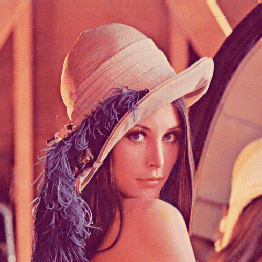

Traitement de l'image
PEIP2 - Algo
9/10/2018
Julien LANGLOIS LS2N IPI - UMR CNRS 6004 Multitude-Technologies @ Wedo julien.langlois@univ-nantes.fr
Connaissances
Définitions - Opérations - Analyse descendanteOutils
Linux - Python 3.5 - Numpy - OpenCVIntroduction
Une image est une représentation visuelle/perceptive de quelque chose.
- Que représenter ?
- un paysage, de la lumière, un sentiment...
- Comment le représenter ?
- support, codage, impression...
Dans notre cas, l'image est une représentation visuelle d'une scène.
Formalisation
xo=140mm xc=55mm
L'acquisition d'une image numérique
Une image
Une image est un ensemble de pixels $p$ structurés en grille.
$I=\begin{pmatrix} p(1,1) & ... & p(1,W) \\ \vdots & ... & \vdots \\ p(H,1) & ... & p(H,W) \\ \end{pmatrix}$L'information dans un pixel varie selon une image:
 en noir et blanc
en noir et blanc
Image en noir et blanc
Un pixel peut prendre deux valeurs :
0 (noir) ou 255 (blanc) (voire 0 ou 1 pour du binaire)Image en niveaux de gris
Un pixel prend une valeur discrète entre :
0 (noir) et 255 (blanc)Image en couleurs (RGB)
Un pixel contient 3 valeurs discrètes :
trois canaux de couleurs (Red, Green, Blue) chacun entre 0 et 255Image en couleurs (RGB)
On peut donc la décomposer en 3 matrices :
Plus généralement
Une image 2D peut être représentée par un tenseur d'ordre $n\le3$.
- $n=2$ pour une image en N&B ou en niveaux de gris
- $n=3$ pour une image en couleurs
Prise en main d'OpenCV et de numpy
Pourquoi Numpy ?
ma_liste = [1,2,3]
print(2*ma_liste)
→ [1,2,3,1,2,3]
import numpy as np
mon_array = np.array([1,2,3])
print(2*mon_array)
→ [2,4,6]
Travail en Numpy [lignes,colonnes]
| composante (i,j) | mon_array[i,j] |
| colonnes de la ligne i | mon_array[i,:] |
| lignes de la colonne j | mon_array[:,j] |
| toutes les composantes | mon_array[:,:] |
| avec un tenseur 3 | mon_array[i,j,k] |
Import d'OpenCV
import cv2
Chargement d'une image
mon_image = cv2.imread('image.png')
Forme du tenseur
print(mon_image.shape)
Affichage de l'image
cv2.imshow('nom_fenetre',mon_image)
cv2.waitKey()
Afficher les composantes RGB de l'image à l'écran.
Conversion en niveaux de gris
mon_image_grise = cv2.cvtColor(mon_image,cv2.COLOR_BGR2GRAY)
En pratique, comment passe-t-on du RGB aux niveaux de gris ?
Opérations sur les images
Des opérations importantes
- Binarisation/Segmentation : seuillage
- Morphologie : érosion et dilatation
- Géométrie : détection de contours
- Transformation : homographie
pour plus tard...
- Filtrage : La convolution
Binarisation / segmentation
Le seuillage
Le seuillage - théorie
$\forall p \in I, p = \begin{cases} 0, & \text{si $p < T$} \\[2ex] 255, & \text{sinon} \end{cases}$
Le seuillage - pratique
Réaliser un seuillage avec $T=170$ sur l'image de Lena en niveaux de gris.Afficher ensuite le résultat à l'écran.
Quelle peut-être l'utilité de cette opération ?
Seuillage - solutions (1)
img_rgb = cv2.imread('lena.png')
img_gray = cv2.cvtColor(img_rgb,cv2.COLOR_BGR2GRAY)
for i in range(img_gray.shape[0]):
for j in range(img_gray.shape[1]):
if img_gray[i,j] < 170:
img_gray[i,j] = 0
else:
img_gray[i,j] = 255
cv2.imshow('resultat',img_gray)
cv2.waitKey()
Seuillage - solutions (2)
img_rgb = cv2.imread('lena.png')
img_gray = cv2.cvtColor(img_rgb,cv2.COLOR_BGR2GRAY)
img_gray[img_gray < 170] = 0
img_gray[img_gray > 0] = 255
cv2.imshow('resultat',img_gray)
cv2.waitKey()
Seuillage - solutions (3)
img_rgb = cv2.imread('lena.png')
img_gray = cv2.cvtColor(img_rgb,cv2.COLOR_BGR2GRAY)
_,img_bin = cv2.threshold(img_gray,170,255,cv2.THRESH_BINARY)
cv2.imshow('resultat',img_bin)
cv2.waitKey()
Morphologie
Érosion et dilatation
Érosion et dilatation
Travail sur le voisinage d'un pixel binaire pour recréer une image.
Qu'est-ce que le voisinage d'un pixel ?
Le voisinage d'un pixel
Le voisinage d'un pixel peut être défini par une taille et une connectivité.
Érosion - théorie
Un pixel est mis à 255 dans la nouvelle image si : - tous les pixels de son voisinage sont à 255 - sinon il est mis à 0
Érosion - pratique
Dilatation - théorie
Un pixel est mis à 255 dans la nouvelle image si : - au moins l'un des pixels de son voisinage est à 255 - sinon il est mis à 0
Dilatation - pratique
Des compléments
Une ouverture : une érosion puis une dilatation Une fermeture : une dilatation puis une érosion
Quelle est l'utilité de ces opérations ?
Vérifions la théorie
Kernel, ouverture et fermeture
kernel = cv2.getStructuringElement(cv2.MORPH_CROSS,(3,3))
img_ouv = cv2.morphologyEx(img_bin,cv2.MORPH_OPEN,kernel)
img_ferm = cv2.morphologyEx(img_bin,cv2.MORPH_CLOSE,kernel)
Appliquer une ouverture et une fermeture sur la précédente image de Lena binaire. Comparer visuellement les résultats et conclure.
Géométrie
Détection de contours
Intuition
Comment trouver le contour extérieur d'une région ?
OpenCV - Préparation
Importez l'image "logo.jpeg", convertissez-la en niveaux de gris puis appliquez un seuillage avec $T=100$.Affichez le résultat à l'écran.
OpenCV - Détection de contours
_,contours,_ = cv2.findContours(img_bin,cv2.RETR_TREE,cv2.CHAIN_APPROX_SIMPLE)
OpenCV - Affichage des contours
Tous les contours :
cv2.drawContours(img_rgb,contours,-1,(0,0,255),2)
Le i-ème contour :
cv2.drawContours(img_rgb,contours,i,(0,0,255),2)
Affichage :
cv2.imshow('resultat',img_rgb)
cv2.waitKey()
OpenCV - Simplification des contours
perim_cnt = cv2.arcLength(contours[18], True)
cnt_simp = cv2.approxPolyDP(contours[18],0.01*perim_cnt,True)
Combien de points composent le nouveau contour 18 ? Comparer visuellement la différence avec l'ancien.
Transformations
Homographie
Deux familles parmi les transformations
- Affines - Conservent le parallèlisme
- Perspectives - Conservent les lignes droites
Transformations affines
Définies par une matrice $M$ $(2\times3)$ entre une image source et destination.
$$(i',j') = (M_{11}i + M_{12}j + M_{13} , M_{21}i + M_{22}j + M_{23})$$ $${img}_{dst}(i,j)={img}_{src}(i',j')$$Comment peut-on faire une translation, rotation ?
Vérifications
$M_R=\begin{pmatrix} 0 & 0 & T_X \\ 0 & 0 & T_Y \end{pmatrix}$ $M_R=\begin{pmatrix} cos(\alpha) & -sin(\alpha) & 0 \\ sin(\alpha) & cos(\alpha) & 0 \end{pmatrix}$
M = np.array([[m11,m12,m13],[m21,m22,m23]],np.float32)
img_dst = cv2.warpAffine(img_src, M, (img_src.shape[1],img_src.shape[0]))
Vérifiez le résultat pour des petites rotations et translations.
Transformations perspectives
Définies par une matrice $M$ $(3\times3)$ entre une image source et destination.
$$(i',j') = \frac{(M_{11}i + M_{12}j + M_{13},M_{21}i + M_{22}j + M_{23})}{M_{31}i + M_{32}j + M_{33}}$$ $${img}_{dst}(i,j)={img}_{src}(i',j')$$Transformations perspectives
$$M=\begin{pmatrix} 1.52e^{-1} & -6.34e^{-2} & 8.00e^{+1} \\ -5.33e^{-2} & 2.08e^{-1} & 5.00e^{+1} \\ -1.39e^{-3} & 6.34e^{-5} & 1.00e^{+0}\end{pmatrix}$$
img_dst = cv2.warpPerspective(img_src, M, (img_src.shape[1],img_src.shape[0]))
Appliquez cette opération sur l'image "rectangle.jpeg". Quelle va être l'utilité d'une telle transformation ?
Transformations perspectives
La matrice $M$ est calculée par une correspondance de 4 paires de pointsTransformations perspectives
Correction de la perspective
pts_src = np.array([[80,50],[400,70],[300,300],[50,140]],np.float32)
pts_dst = np.array([[0,0],[450,0],[450,450],[0,450]],np.float32)
M = cv2.getPerspectiveTransform(pts_src,pts_dst)
Réaliser la transformation précédente sur l'image "rectangle_persp.jpeg". Conclure.